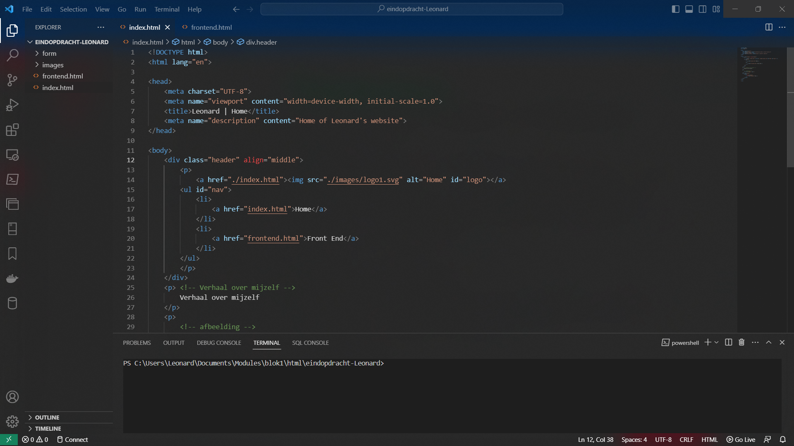

Mijn naam is Leonard Ampoe, 21 jaar oud en ik houd van programmeren. Ik zit nu op het ROC MBO College
Amstelland te Amstelveen. Ik woon in Holendrecht, Amsterdam en die staat bekend voor de 1106. Daar woont
de
rapper JoeyAK die de buurt bekender heeft gemaakt. Ik ben nu bezig met het leren van C++ om daarna games
mee
te maken. Ik ben het meeste geïnteresseerd in UI/UX, omdat het mij het meeste tegenzit in de games van
tegenwoordig. Ik ben wel nog een beginner, dus heb ik nog geen heel concreet project gemaakt in C++.
Daarnaast ben ik recentelijk bezig met het creëren van concept-websites in Figma. Voordat ik aan coderen
dacht was in een FiveM developer. FiveM is een multiplayer modificatie van het welbekende spel “Grand
Theft
Auto 5”, vandaar de naam Five (5) M (Multiplayer). Er werd voornamelijk gecodeerd in Lua, maar er kwam
er
steeds meer bij kijken. C#, HTML, CSS, SQL, JS, etc... Ik vind dat als je wilt beginnen met coderen en
je
bent nog jong, begin dan met het maken van een server in FiveM. Je leert er veel van net zoals ik dat
deed.

Schermafdruk van VS Code, primaire IDE in gebruik.